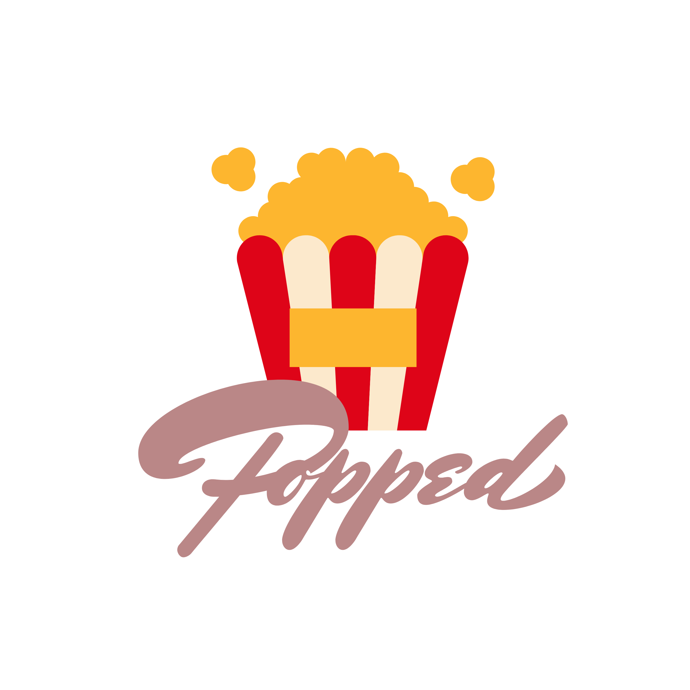

<ion-header no-border>
  <ion-toolbar no-border>
    <ion-buttons color="secondary" slot="start">
      <ion-button (click)="showSearch()">
        <ion-icon name="search" mode="md"></ion-icon>
      </ion-button>
    </ion-buttons>
    <ion-buttons color="secondary" slot="end">
      <ion-button (click)="detail()">
        <ion-icon name="add" mode="md"></ion-icon>
      </ion-button>
    </ion-buttons>
  </ion-toolbar>
</ion-header>

<ion-content>
  <div class="main-container" text-center>
    
    <h1>Welcome to Popped</h1>
    <p>Search for your favorite movie titles below.</p>
    <ion-button color="secondary" shape="round" (click)="showSearch()">
      Search Movies
    </ion-button>
  </div>
</ion-content>
